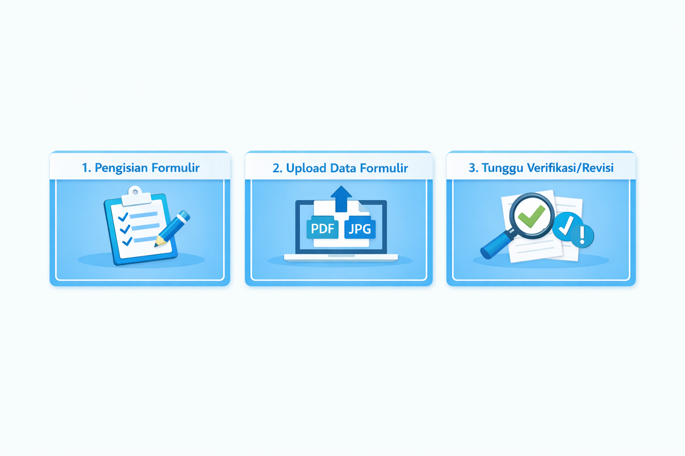

Tahapan Pendaftaran

Langkah-Langkah :
- Registrasi — Buat akun di portal PPDB.
- Isi Data — Lengkapi formulir biodata dan NIK.
- Unggah Berkas — Upload dokumen persyaratan.
- Verifikasi — Pengecekan oleh panitia sekolah.
- Selesai — Pantau hasil pengumuman.